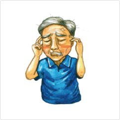
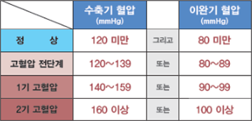
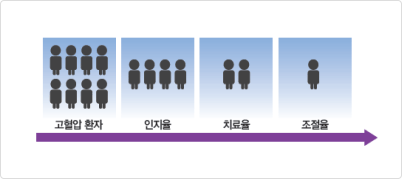
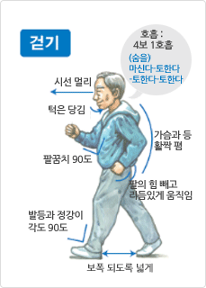

심장이 수축과 이완을 반복하면서 혈관을 통해 혈액을 온 몸에 공급할 때 혈관벽에 미치는 압력을 혈압이라고 하는데, 혈압이 정상보다 높은 상태로 지속되는 경우를 고혈압이라 합니다. 심장이 수축하여 혈액을 내보낼 때 혈관이 받는 압력을 수축기 혈압, 온몸을 돌고 심장으로 들어올 때 혈관이 받는 압력을 이완기혈압이라고 합니다. 수축기 혈압이 140mmHg이상 이거나 이완기 혈압이 90mmHg이상 일 때를 고혈압이라고 합니다.
고혈압의 증상
고혈압은 뚜렷한 증상이 없는 것이 일반적이며, 대부분 심각한 합병증이 생겨 고혈압이 있음을 알게 되는 경우가 많습니다. 이러한 이유로 고혈압을 ‘소리 없는 저승사자’,‘침묵의 살인자’라고 부릅니다.

머리가 무겁고 아프다.
얼굴이 빨개진다.
귀가 울린다.
눈에 충혈이 있다.
숨이 차고 두근거린다.
코피가 잘 난다.
손발이 저리거나 붓는다.
어깨가 쑤신다.
고혈압의 위험요인
조절할 수 없는 위험요인
- 나이 : 나이가 들수록 혈압은 올라갑니다.
- 유전 : 부모 모두 고혈압일 경우 80%, 부모 중 1명 고혈압일 경우 25~40%가 유전됩니다.
조절할 수 있는 위험요인
- 비만 : 체중이 증가하면 혈압이 올라갑니다. 통계에 의하면 비만인은 정상인보다 3배 이상 고혈압에 잘 걸리고 당뇨병과 고콜레스테롤혈증도 많다고 합니다.
- 나트륨(소금) 과잉섭취 : 소금의 과잉 섭취 시 혈관 내의 나트륨이 수분을 저장하여 혈액량을 증가시켜 혈압을 상승시킵니다. 소금 섭취량이 6g 증가 할 때 마다 심장병 사망률은 61%, 뇌졸중 사망률은 89% 증가합니다. 우리나라 고혈압 환자의 50%이상이 소금과잉섭취로 인해 혈압이 상승합니다.
- 흡연 : 담배속의 니코틴을 비롯한 각종 유해 물질은 혈관을 손상시켜서 딱딱하게 만들고, 혈관을 수축시켜 혈압을 상승시킵니다. 이 밖에도 담배에서 나오는 일산화탄소는 산소부족을 가져와 혈액량의 증가를 유발하여 혈압을 상승시키게 됩니다.
- 과음 : 하루 3~4잔 이상의 술을 마시는 사람들은 술을 마시지 않는 사람에 비해 고혈압이 생갈 위험이 증가합니다. 소주 1/3병을 매일 마실 경우 혈압이 3~5mmHg정도가 상승합니다.
- 스트레스 : 스트레스를 받으면 체내에서 혈압상승물질(아드레날린)의 분비가 늘어나 혈압이 올라갑니다. 또한 스트레스로 인해 과음, 과식을 하여 비만을 초래하거나 수면부족과 흡연 증가로 인해 혈압이 상승됩니다.
- 카페인 : 커피, 청량음료, 초콜렛, 홍차 등은 혈압을 일시적으로 상승시킵니다.
고혈압의 진단
고혈압은 심장혈관계 합병증에 의한 사망률의 증가를 기준으로 분류됩니다. 보통 두 번 이상 방문하여 각각 2회 이상 잰 혈압의 평균을 기준으로 합니다.

고혈압의 진단
정상: 수축기 혈압(mmHg) 120 미만 그리고 이완기 혈압(mmHg) 80 미만
고혈압 전단계: 수축기 혈압(mmHg) 120~139 그리고 이완기 혈압(mmHg) 80~89
1기 고혈압: 수축기 혈압(mmHg) 140~159 그리고 이완기 혈압(mmHg) 90~99
2기 고혈압: 수축기 혈압(mmHg) 160 이상 그리고 이완기 혈압(mmHg) 100 이상
고혈압의 합병증 가운데 가장 많이 발생하며, 정상인보다 7배 많이 발생합니다. 특히 뇌출혈은 고혈압에 의한 경우가 가장 많습니다.
심근경색증, 협심증
심장 근육에 혈액을 공급하는 관상동맥이 좁아지거나 막혀서 발생하며, 정상인보다 3배 많이 발생합니다. 심근경색증의 경우 사망률이 높아 병원에 도착하기 전에 약 50%가 사망하는 무서운 질환입니다.
만성콩팥병(신부전)
고혈압이 장기간 지속되면 신장의 모세혈관이 높은 압력에 손상되어 딱딱하게 변해 노폐물 배설 기능이 저하됩니다. 그로 인해 단백뇨가 검출되고 부종,빈혈 등이 발생하게 됩니다. 결국 만성신부전으로 진행되면 투석이나 신장이식 등의 치료가 필요합니다.
고혈압성 망막증
고혈압이 장기간 지속되면 망막모세혈관이 높은 압력에 출혈이 생겨 시야결손 및 실명까지 유발하게 됩니다. 일반적으로 고혈압을 15년 이상 앓은 경우 망막증 발병률이 높습니다.
고혈압의 관리
고혈압의 관리 현황
고혈압 환자의 50%만이 질병의 유무를 인지하고, 고혈압을 인지하고 있는 환자 중 50%만이 치료를 받고 있습니다. 그 중 50%만이 혈압이 정상범위로 조절 되고 있습니다. 즉 고혈압 환자 8명 중 제대로 관리를 하고 있는 사람은 1명 정도인 셈입니다.

고혈압의 치료목표
고혈압의 치료 목표는 완치가 아니라 정상혈압을 유지하여 합병증을 예방하는 것입니다. 고혈압 환자가 치료를 받음으로써 뇌졸중은 30%, 심근경색증은 25% 감소시킬 수 있습니다. 일반적으로 수축기 혈압은 140mmHg, 이완기 혈압은 90mmHg 미만으로 조절합니다. 그러나 당뇨병이나 다른 위험요인을 가지고 계신 분들은 수축기 혈압은 130mmHg, 이완기 혈압은 80mmHg미만으로 조절합니다.
약물 관리
환자마다 여러 가지 검사결과와 진단을 통해 환자의 상태에 따라 의사가 처방하는 약들이 다릅니다. 따라서 약물의 선택과 조절은 반드시 담당 의사와 상의해야 하며 의사의 처방과 지시대로 꾸준히 먹는 것이 중요합니다.
약 종류에는 이뇨제, 베타차단제, 칼슘통로차단제, 안지오텐신Ⅱ수용체 차단제, 안지오텐신 전환효소억제제(ACE 억제제), 알파차단제 등이 있습니다.
어지러움, 피곤함, 발목부위의 부종, 근육경련, 기침, 소변을 자주 보는 것 등의 증상이 있을 시 임의로 약을 중단하지 마시고 병원에 방문하여 꼭 의사와 상의합니다.
약물복용 시 주의사항
- 매일 일정한 시간에 규칙적으로 복용합니다.
- 약 복용을 잊어버린 경우 생각나는 즉시 복용하며 한 번에 두 배의 용량을 먹지 않도록 합니다.
- 검사나 수술 전에 약복용 여부를 담당의사와 상의합니다.
식사 관리
나트륨(소금)섭취를 줄입니다.
- 장류(간장,고추장,된장), 장아찌, 젓갈 같은 염장 식품은 피합니다.
- 자반보다는 날 생선을, 가공식품 보다는 자연 식품을 섭취합니다.
- 국이나 찌개, 면류 등은 건더기만 먹고 국물은 남깁니다.
콜레스테롤 섭취를 줄입니다.
- 육류(쇠고기, 돼지고기, 닭고기 등)의 껍질과 비계, 내장은 섭취를 줄입니다.
- 식물성기름(올리브유, 옥수수유 등)을 사용합니다.
식이섬유의 섭취를 늘립니다.
- 신선과 채소와 과일, 해조류를 충분히 섭취합니다.
탄수화물 섭취를 적절히 합니다.
- 간식으로 빵, 고구마, 감자 등의 탄수화물 섭취를 제한합니다.
표준체중을 유지합니다.
- 표준체중(Kg) = [신장(cm)-100] x 0.9
운동 관리
꾸준한 운동은 체중감소, 심폐기능개선, 고지혈증 개선, 스트레스 해소 등에 도움을 주어 고혈압환자에게 유익합니다. 그러나 운동을 처음 시작 할 때는 담당의사와 상담 후 운동 종류 및 강도, 시간을 정하는 것이 좋습니다.

걷기 운동 자세
시선은 멀리
턱은 당김
호흡은 4보 1호흡 (숨을)마신다-토한다-토한다-토한다
팔꿈치 90도
가슴과 등 활짝 폄
팔의 힘 빼고 리듬있게 움직임
발등과 정강이 각도 90도
보폭 되도록 넓게
강도를 조절하기 쉬운 ‘걷기’ 운동이 고혈압 환자에게 가장 좋은 운동 종목입니다.
- 유산소 운동 (걷기, 조깅, 자전거 타기, 수영 등) : 급격한 혈압 상승이 없어 고혈압 환자에게 좋습니다.
- 무산소 운동 (근력운동, 윗몸 일으키기, 팔굽혀펴기 등) : 급격한 혈압 상승을 유발하므로 고혈압 환자의 경우 주의가 필요합니다.
운동전 후 준비운동과 정리운동을 5분씩 합니다.
- 준비운동 : 근육과 관절을 충분히 풀어 손상을 예방합니다.
- 정리운동 : 급격히 올라간 혈압과 맥박을 서서히 내립니다.
생활습관개선
금연을 실천합니다.
- 담배를 끊으면 고혈압 약물치료의 효과가 상승합니다.
- 고혈압 외에도 심장마비, 심부전증, 뇌졸중 등의 중증 심뇌혈관질환의 위험이 감소합니다.
절주/금주를 실천합니다.
- 술을 끊거나 줄이면 고혈압 약물치료의 효과가 상승하며, 혈압 하강효과는 1~2주 정도면 바로 나타납니다.
- 소주2.5잔(1/3병), 맥주1.5병(720cc), 막걸리2/3병, 와인1.5잔(200~300cc)정도가 적정량입니다. 여성이나 체중이 적게 나가는 사람은 적정량의 반만 섭취합니다.